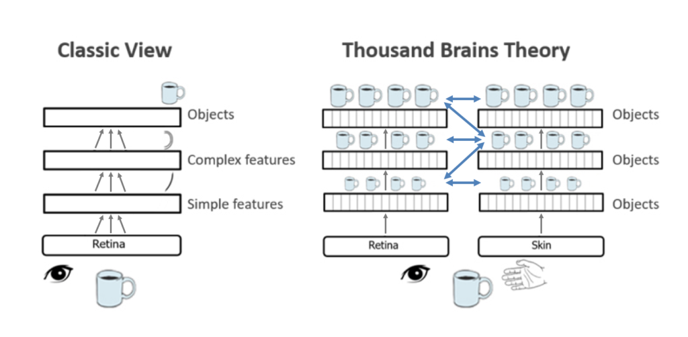

Introduction
The author brilliantly presents an innovative hypothesis of how a brain works and how its design is different from the current AI and neural networks. In order to build intelligent machines, we need to first understand the basic architecture of our brain and how it functions perception, cognition, action and intelligence. Hawkins focuses on why humans are smarter than other fellow species, he delves into different possibilities like due to their large size cortex, ability to interpret patterns, the memory system and ability to predict future events.
The Brain and Patterns
Hawkins provide interesting insight into the correlation of different regions of the brain. According to him, human’s intelligence emerges in the cerebral cortex, which is 6 layers thick and contains around thirty billion neurons. The lower area of the cortex is where sensory information arrives, which processes it and sends the information up to the higher areas using some neural connections. The higher region sends the feedback using different connection making it a two-way flow of information. All five senses of brain- sight, hearing, touch, smell, and taste functions in similar fashion, they all enter brain as stream of spatial patterns.
Memory and Prediction
We are aware of the capacity of a computer which operates million times faster than our brain but still brain is able to performs several difficult tasks which a computer cannot even compute in billion steps. And this is possible because of our memory system, our brain uses memory to solve problems. There are four main attributes of neocortical memory, which differs from a computer memory:
- It stores sequence of patterns
- The patterns are recalled auto- associatively
- The patterns are stored in invariant form
- The patterns are stored in hierarchy

And due to all these properties and cortex interconnections, our brain remembers patterns, understand partial information and predict future events based on past memory. Whereas the artificial auto-associative memory fails to recognize information if it is rescaled or transformed in any way. The memory and prediction allow a human to make intelligent decisions. And with larger cortex humans can accumulate more memories and makes smarter predictions.
Strong Point
I like how Hawkins took a fundamental principle of the brain and elaborated its contribution to our intelligence. His detailed explanation of the different regions of the cortex transmitting information through sensory hierarchy, gave us a new perspective on designing intelligent machines in future. The book is a must read for all AI enthusiast to get a clear understanding of what goes inside the brain, even while making smaller decisions.
Weak Point
Even though the author presented a detailed explanation of the design of human brain and how it processes information, but an actual implementation of this idea is still very difficult. Even with current technology and advancement in the field of AI and neural networks, I am not sure when and how can we achieve such a smart system and its decision-making capabilities. But still book clears many of our doubts and provides a fresh look into intelligence.